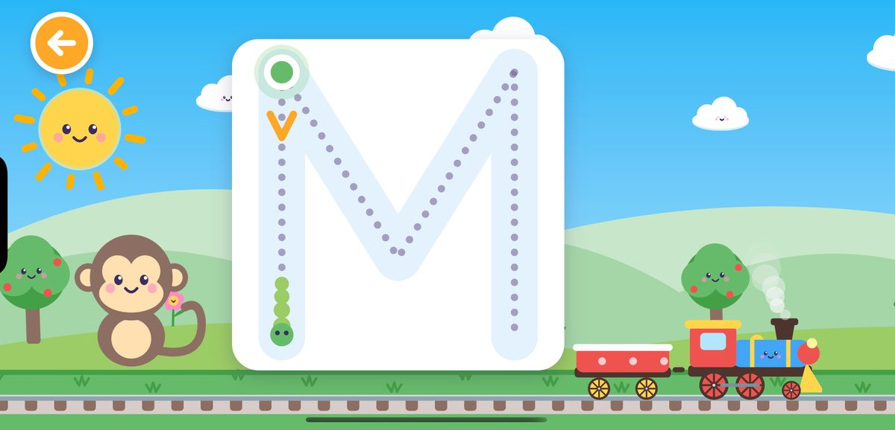
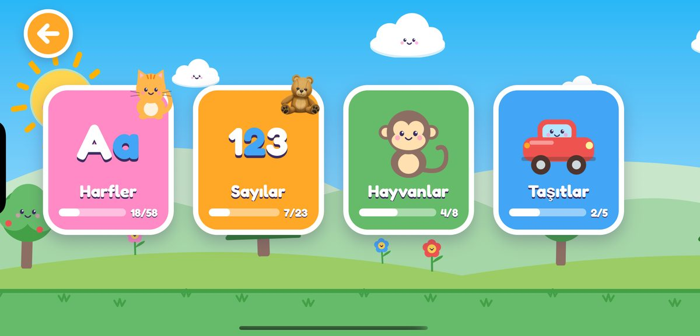
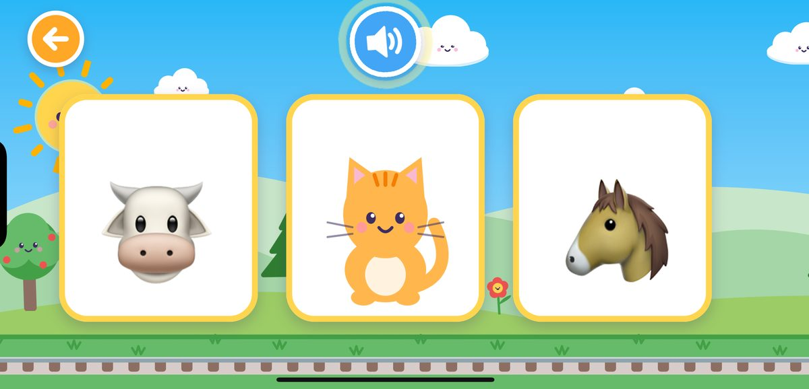
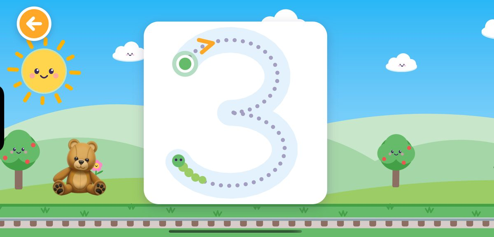
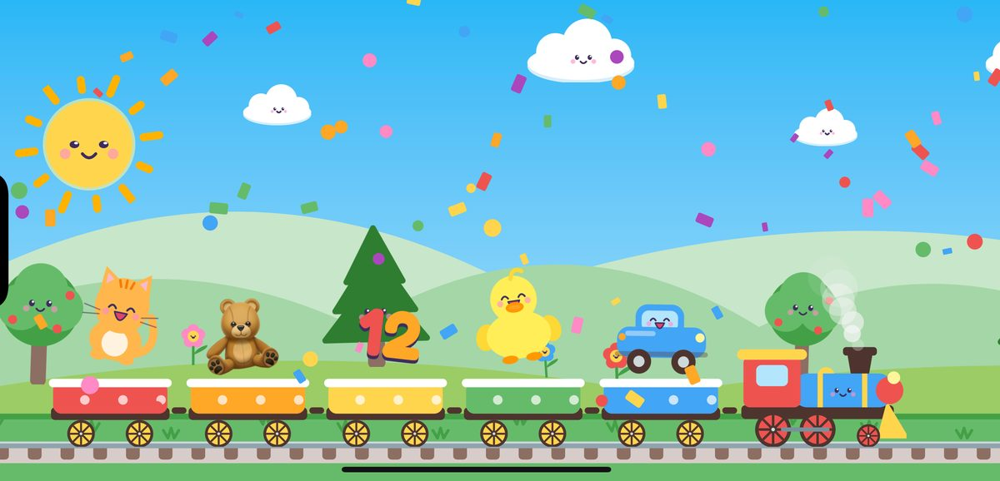
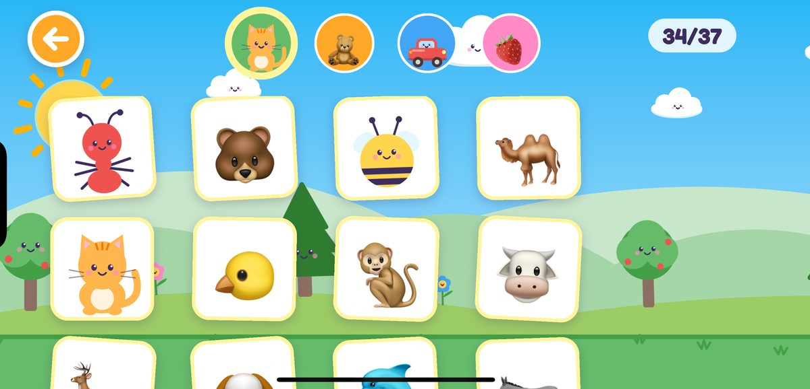

Harfler ve sayılar treni yola çıkıyor!
Oyun Treni, 4 yaş ve üzeri çocuklar için neşeli bir öğrenme oyunu. Çocuklar harf ve sayı çiziyor, oyuncak sayıyor, hayvan seslerini tahmin ediyor ve kendi çıkartma albümlerini dolduruyor. Her başarıdan sonra yeni bir arkadaş trene binip yola çıkıyor.
Çocuklar neler öğreniyor?
Adım adım harfler
Alfabenin bütün harflerini, büyük ve küçük, yol gösteren noktaları, okları ve küçük tırtılı izleyerek çizin. Her harf yeni bir arkadaşla tanıştırıyor.
Sayılar ve sayma
1'den 20'ye kadar sayılar, ayrıca 50, 100 ve 1000. 1'den 5'e kadar olan sayılarda çocuklar oyuncakları sayıp trene de yüklüyor.
Hayvan sesleri
Gerçek bir hayvan sesini dinleyin ve doğru hayvanı bulun. Hoparlöre dokunarak sesi istediğiniz kadar tekrar dinleyebilirsiniz.
Taşıtlar ve renkler
Bu ses hangi taşıtın? Kırmızı arabayı bulabilir misin? Taşıtlar, sesler ve renklerle ilgili eğlenceli sorular.
Çıkartmalar ve kutlamalar
Biten her istasyon trene bir yolcu bindiriyor. Tren dolunca konfetili bir kutlama başlıyor ve yeni arkadaşlar çıkartma albümüne taşınıyor.
Okuma bilmek gerekmez
Sesli yönlendirme, büyük düğmeler ve nazik geri bildirim. Kaybetmek ya da olumsuz bir şey yok, sadece yeniden deneme var.
Bir göz atın






Ücretsiz deneyin
Ücretsiz başlangıç
- A'dan F'ye kadar harfler (büyük ve küçük)
- 1'den 10'a kadar sayılar, 1–5 arasında sayma
- Çıkartma albümü ve kutlamalar
★ Tam sürüm
- Bütün alfabe, büyük ve küçük harfler
- 20'ye kadar bütün sayılar, ayrıca 50, 100 ve 1000
- Hayvan sesi ve taşıt soruları
- İleride eklenecek bütün yeni istasyonlar
- Tek seferlik satın alma, abonelik yok
Satın alma bir ebeveyn kapısının arkasında olduğu için çocuklar yanlışlıkla bir şey satın alamaz. Önceki bir satın almayı istediğiniz zaman ayarlardan geri yükleyebilirsiniz.
Ebeveynler düşünülerek yapıldı
Çocuklar için güvenli
Reklam, uygulama dışına bağlantı ya da sohbet yok. Ayarlar ve satın alma ebeveyn kapısının arkasında.
Gizliliğe saygılı
Hiçbir kişisel veri toplanmaz. İlerleme sadece cihazınızda saklanır. Gizlilik politikasını okuyun.
İki dil
Türkçe ya da İngilizce oynayın. Her dilin kendi alfabesi, kelimeleri ve sesi var. Dili ayarlardan değiştirebilirsiniz.